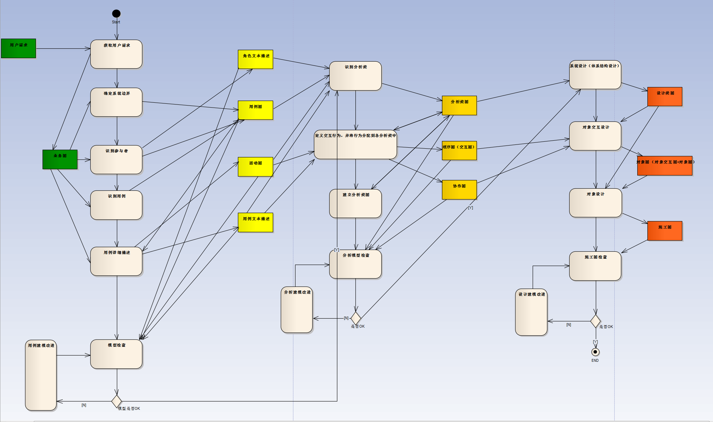

面向对像系统设计的方法与工具-OVERVIEW
图中第一个纵队是用例建模，第二个纵队是分析建模，第三个纵队是设计建模。
图中仅仅描述了较为简单的场景的面向对像设计流程，设计者不必恪守这一顺序，在实际的系统设计中，往往会同时在多个环节中同时开展工作。
但本图基本上将面向对像系统设计中涉及的环节以及各环节的输入输出都进行了覆盖，便于大家形成一个总体认识。
按照面向对像方法开展系统设计，可采用标准化的UML语言，而一般提供UML语言功能的工具同时也提供了其它便于设计者使用的非标准化工具。推荐工具：EA(Enterprise Architect）
